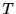
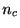
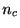

| HOME PAGE |
| Spike Density Estimation |
| - Histogram Method |
| - Kernel Method |
| Share it with your friend |
| Tweet |
| HOME PAGE |
| Spike Density Estimation |
| - Histogram Method |
| - Kernel Method |
| Share it with your friend |
| Tweet |
電気神経生理学の動物実験では感覚刺激・行動・注意等と神経細胞の発火頻度（レート）の相関関係がよく調べられる. 広く使われているレート推定の手法に, 同一刺激下で行われた複数回の試行のスパイク時系列を適当な時間幅をもつ区間に分割し, その中でのイベント生成率（発火率）を棒グラフとして表す Peristimulus Time Histogram (PSTH)がある. PSTHの形状は分割する区間の時間幅に依存するにもかかわらず, 区間幅は多くの場合研究者により恣意的に与えられている.
ここでは平均二乗誤差最小化の観点から最適区間幅を決定する簡便な公式を導出する. またレートが一般の定常確率過程の場合の最適区間幅の理論値のスケーリング則を導出し, 転移点近傍での振る舞いを調べる. この理論の応用としてコスト関数を外挿することで, データからヒストグラム作成に必要な最小試行数を求めたり, 背後のレート過程がなめらかな過程か否かを推定することができる.
長さの時間依存Poisson過程のレート（強度過程）を ( )とする. 区間 の棒ヒストグラムの真の高さは
| (3.1) |
スパイク時系列のレート とヒストグラム の当てはまりの良さは平均積分二乗誤差(Mean Integrated Squared Error, MISE)で評価する. 十分長い定常なスパイク時系列が与えられた場合MISEは次式で与えられる[Shimazaki and Shinomoto, 2007].
| MISE | (3.3) | |
| (3.4) |
MISEを区間幅内でのレートのゆらぎとスパイク生成のゆらぎに分割し, さらに区間幅の選択に依らない項を除いたコスト関数を導入することができる.
式3.5の第一項にCramér-Raoの不等式を適用することで, コスト関数の下限がの統計量で与えられる.
 が十分大きい場合, の原点付近での展開式を用いて式3.7右辺の極値を与えるを求める. が原点でCusp型となるときは漸近値
を用いて最適幅は
で与えられる. が原点でなめらかなときは対称性から
であり, 最適幅は
となる.
が十分大きい場合, の原点付近での展開式を用いて式3.7右辺の極値を与えるを求める. が原点でCusp型となるときは漸近値
を用いて最適幅は
で与えられる. が原点でなめらかなときは対称性から
であり, 最適幅は
となる.
 が小さい転移点付近では
と展開する(, は定数). このとき臨界点はでありランダウの２次相転移の理論が適用できる.
では最適幅の振る舞いは
で表される.
が小さい転移点付近では
と展開する(, は定数). このとき臨界点はでありランダウの２次相転移の理論が適用できる.
では最適幅の振る舞いは
で表される.
 回の試行数のスパイク統計
回の試行数のスパイク統計 , を用いて, 試行数が回の場合の最適幅を, 外挿したコスト関数
, を用いて, 試行数が回の場合の最適幅を, 外挿したコスト関数
神経科学の古典的な実験では，記録されたスパイク時系列は刺激・行動などの開始時刻でそろえてならべる．これをラスタープロットという．これらスパイク時系列を重ね合わせたスパイク時系列データ ( ) を次のようにデルタ関数を用いて表す．
一般に良く用いられるのはガウスカーネルであり，これは正規密度分布のこと．
最適カーネルバンド幅は以下のコスト関数を最小化するバンド幅により得ることができる(Shimazaki & Shinomoto 2010[Shimazaki and Shinomoto, 2010] )．
デルタ関数を用いて，データを次のように表すことができる．
| (3.12) |
| (3.13) | ||
| (3.14) |
| MISE | ||
 |
(3.15) |
| (3.16) |
| (3.17) |
![$\displaystyle =\int\hat{\lambda}\left( \mathbf{x}\right) ^{2}\,d\mathbf{x}-2\in...
... -\frac{{1}}{n}{k}_{w}(\mathbf{0})s\left( \mathbf{x}\right) \right] d\mathbf{x}$](img470.gif) |
||
ガウスカーネルの場合，これを用いて以下の公式を得ることができる．２次元のガウスカーネルは
| (3.18) |